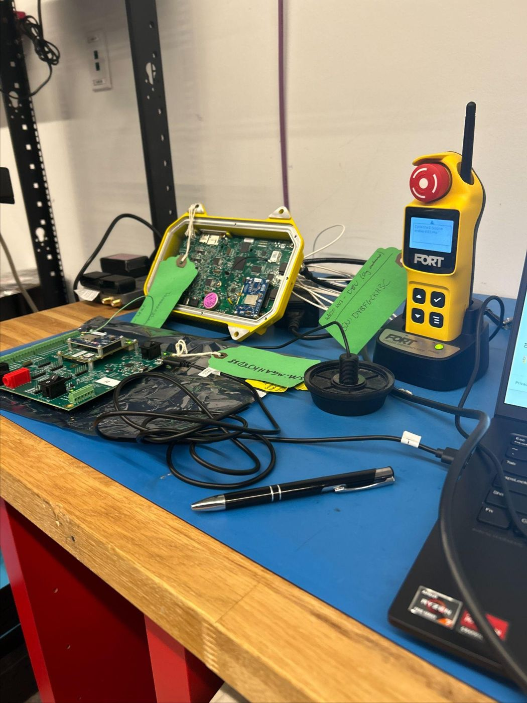
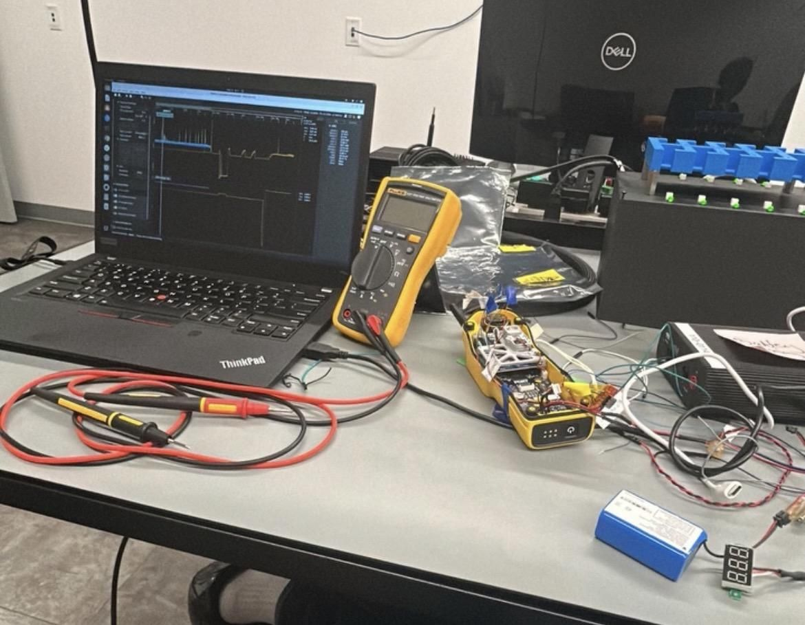
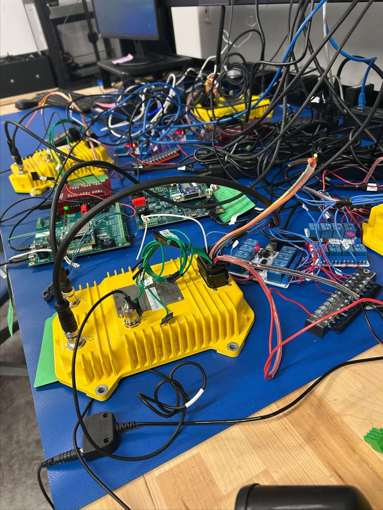
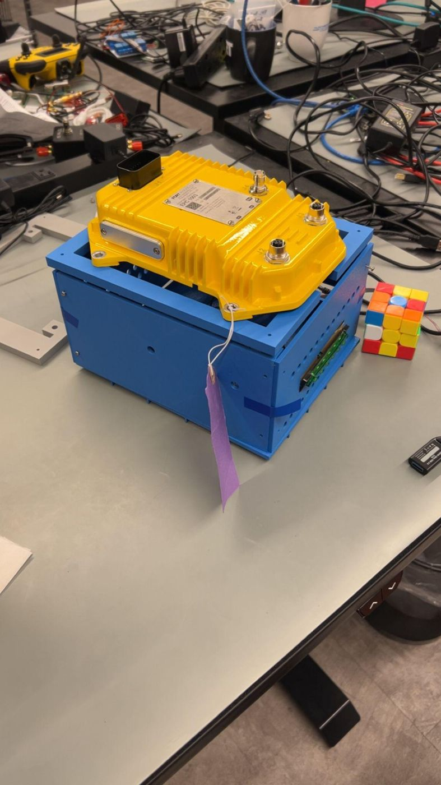

| Where | Philadelphia, internship |
|---|---|
| When | May 2026 |
| Role | Systems integration and test intern, working with the quality engineering team |
| Length | Four weeks |
| Devices tested | 25 to 50 wireless units |
| Tools | CadQuery, Bambu Studio, LabJack, Jira, Altium 365 |
FORT makes wireless safety controls for industrial robots and machines, like handheld emergency stops.
I started by configuring transmitters and receivers on the bench to learn how the radio systems work end to end. From there I set up fixtures for battery and range testing, reviewed the range test method with an engineer on the team, and helped draft a battery characterization plan for two product lines. I also logged bug reports, sat in on incident meetings, and tracked my own work in Jira.
The hardest part was learning the radio stack from zero in four weeks, with AP exams the same month.




I designed a 3D-printed enclosure for the EPC test automation hardware: a LabJack, an 8-channel relay module and a breakout board inside, with the EPC sitting in a cradle on the lid. I modeled it in CadQuery, exported it to STEP and sliced it in Bambu Studio.
The tricky part was fitting the specific boards and leaving room for cables while keeping the design printable.
| Footprint | 240 × 180 × 90 mm |
|---|---|
| Material | PLA |